Wednesday, September 6, 2017
Out of the country…and into a new world
I am annoyed with Norwegian Airlines. After waiting in a long line, I finally get to the check in desk at the airport and the lady at the counter tells me to put my carry-on luggage on the scale. I’m confused because I’ve never been asked to weigh my carry-on luggage, but she motions me to continue and I put it on the scale. She then tells me to add my backpack on top. She gives me a cold smug stare and tells me that my luggage is 6 kilos over the 10 kilos limit. Since when did a backpack count as part of your carry-on??
How much to check it in? I ask, not wanting to hear the answer. Sixty-five, she replies, like a predator patiently waiting for its prey. Since I didn’t want to throw away the few clothes I had packed, I had no choice but to pay $65 for a carry-on suitcase.
The red-eye from NY to London was 6 hours. Once out of the plane I was greeted by an even larger line for customs. I waited nervously in line for an hour before the security guards would let me cut to the front of the line in order to make my flight. People around me talked in British accents and a wave of excitement rushed through me—but London will have to wait. I bought a portable charger in the airport. I tried it to make sure it worked with my iPhone, and went back to ask a question. The cashier answered it, then, referring to the packaging, asked, would you like me to put that in the rubbish? I said yes before realizing that she had used the word rubbish. I wonder if they think our accents sound weird.
At 2 I was on another plane, this time to Venice. I was still quite sleepy and groggy, but three hours later I was in Venice! I couldn’t believe it. Alice and I were on the same flight, so we took the ATVO bus to Piazzale Roma and from there walked over multiple bridges and down multiple cobblestone streets to find our hostel. Venice looked like what I had seen in pictures—the old-fashioned houses in washed out but bright colors lining the canals, the flower pots beneath windows, the gray cobblestone streets, the gondolas sailing over the still green waters.
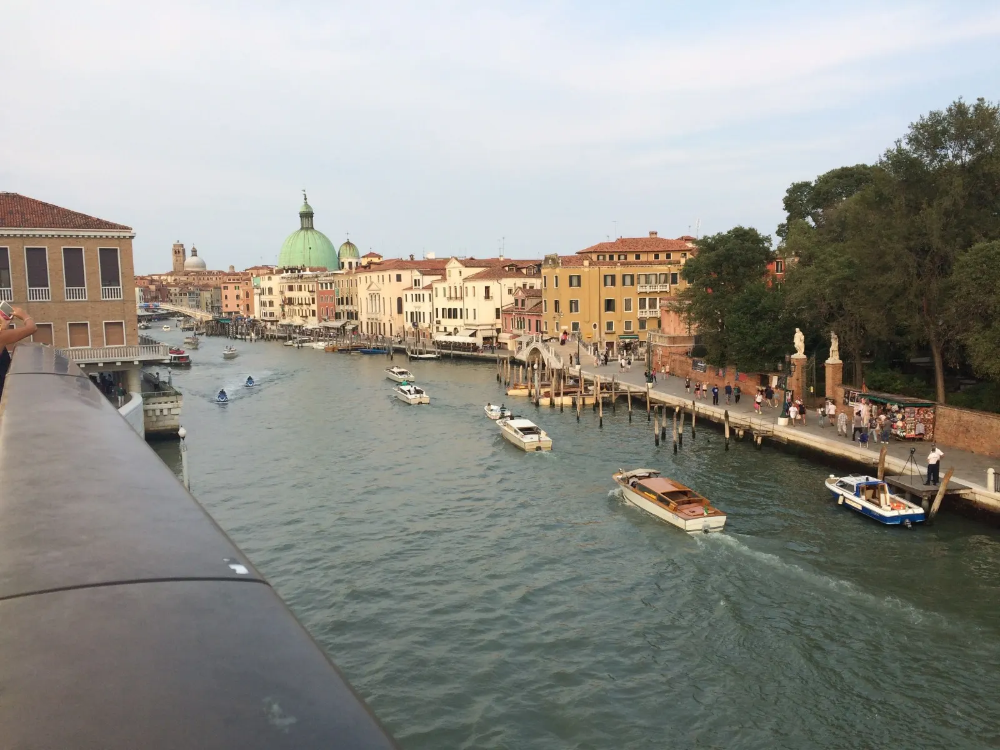
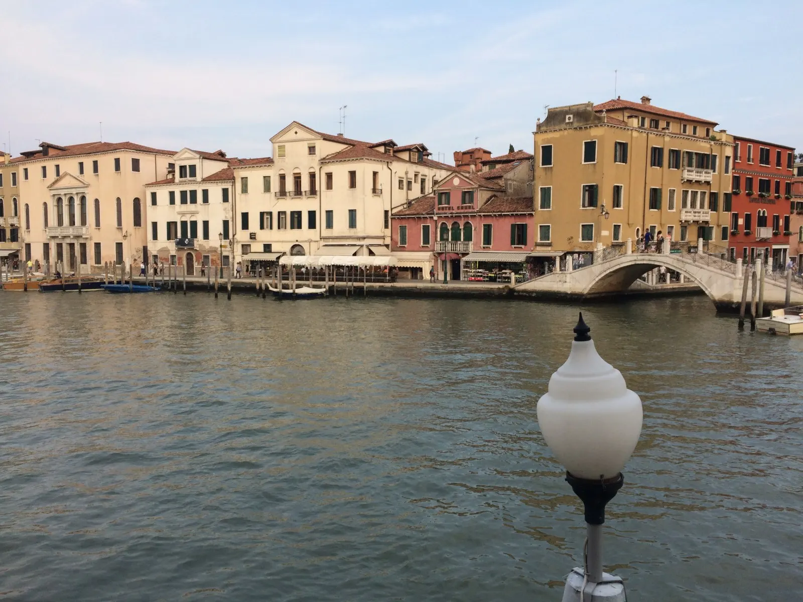
After dropping off our stuff, we walked along the street. The streets were full of people strolling about, and it was a humid but cool night in Venice. We decided to get pizza we saw through the window that looked good.
The cashier didn’t understand much English, so it took us a while to get that he was asking us how big we wanted our slice (the pizza was a long piece, so we had to tell him when to cut the slice). He looked at my slice and told me 3.80 euros. Not a bad price for a large slice. Then I got my first Italian gelato—a hazelnut cone for 1.60 euros. I plan to try as many new flavors as possible.
Thursday, September 7, 2017
A Day in Venice
We had an itinerary planned for our day in Venice, but of course things don’t always go as planned. First of all, I didn’t take jet lag into account. We were now 6 hours ahead of New York, so I couldn’t rely on getting up at 7am as planned. I also took LTE for granted and didn’t realize I wouldn’t have Google Maps here (isn’t Google everywhere??) , so Alice and I did things the old fashioned way and asked people for directions. Luckily most Italians spoke some English and there were signs on the main street leading to the famous Piazza San Marco. But it still took us much longer than expected to get places due to random alleyways and bridges. Lots of bridges.
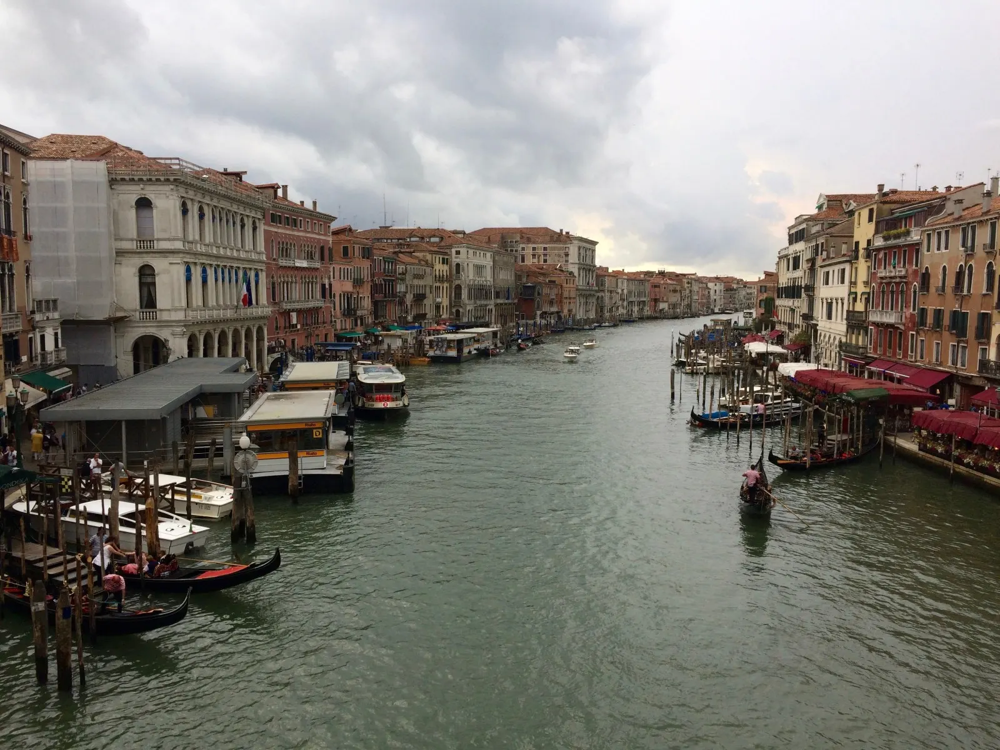
I was delighted by the picturesque canals lined with houses painted in washed out but colorful pinks and reds and yellows and oranges. Coming from New York, the pace of life in Venice seemed especially slow. In the narrow streets, we often found ourselves stuck behind and finding gaps to pass people. People took their time strolling and stopping to talk; it seemed strange that anyone would be in a hurry. The canals smelled like the ocean. Gondolas with red leather seats floated by; occasionally we heard the rich deep voice of a gondola rower. We passed by several fancy American stores, from Gucci to Chanel. The only thing that annoyed me was the smoking. People in Italy smoke like college students drink—it’s a way of life. We were convinced that our lifespans would be shortened from all the cigarette smoke, especially when we were stuck in narrow corridors and train stations.
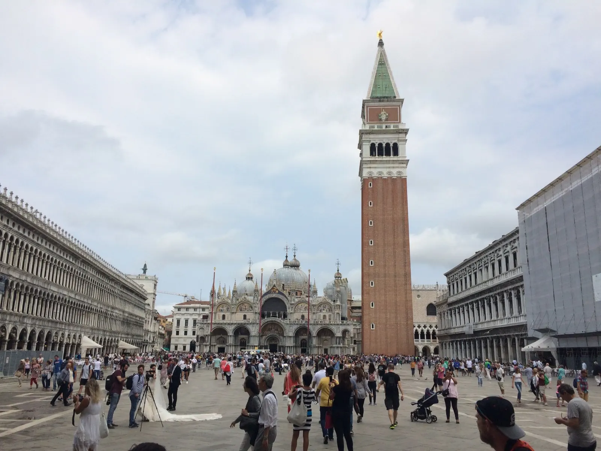
Alice and I met up with Rachael at Piazza San Marco and went into the famous St. Mark’s Basilica, an 11th century Roman Catholic cathedral. We were in awe of its ornate and extravagant design and structure, both inside and out. It is nicknamed Chiesa d’Oro (Church of gold) because of its opulent design, gold ground mosaics, and status as a symbol of Venetian wealth and power, and it is believed that St. Mark’s body is buried inside. We then visited the adjacent Doge’s Palace, now a museum but formerly the residence of the Doge of Venice, the supreme authority of the Republic of Venice. I overheard a tour guide describing how Venetian art emphasizes color and sensuous detail of objects, which indicates that they care about luxury goods and silks more than bodies and muscles. We walked under the Bridge of Sighs, named so because prisoners supposedly caught their last glimpse of Venice as they crossed the bridge to their prison cells.
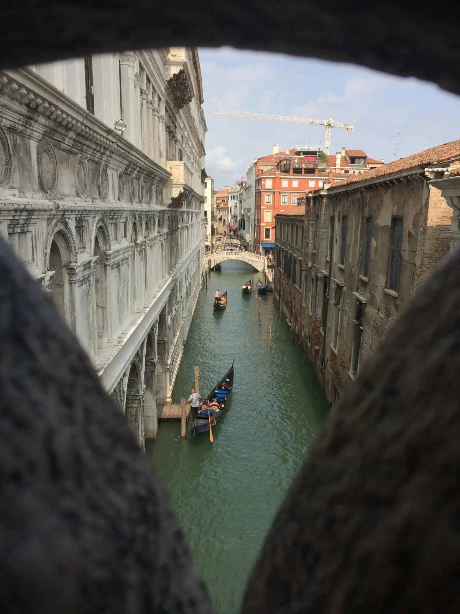
When we came out of the museum, we found the square flooded—a pipe must’ve burst.
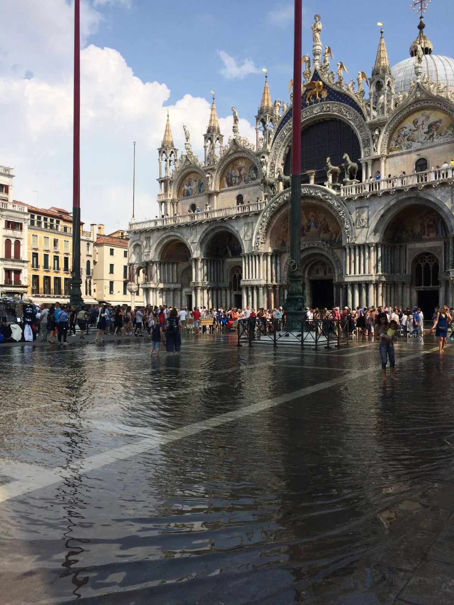
After barely eating or drinking all day, we were pretty thirsty. We went to a trattoria, which offers cheaper, usually local cuisine, for our first full Italian meal.
Unlike American restaurants, they
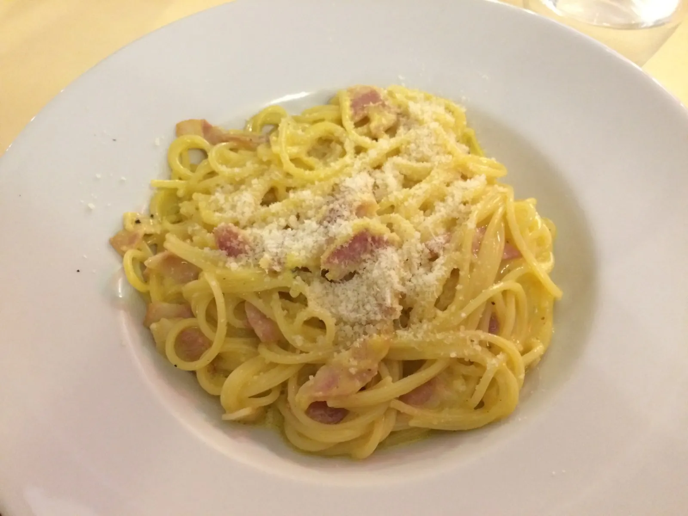
don’t offer tap water, so we had to pay for a bottle of water, which only provided 1-2 cups a person. My spaghetti alla carbonara was good but quite dense—lots of cheese and carbs. We also soon realized that they really take their time and aren’t in a hurry to get you in and out. It probably took the same amount of time for our food to be served as to get the check.
After lunch we went to another museum, the Museo Correr. More art and treasures! My eyes were blinded by the bright jewels and emeralds on display including the Holy Grail.
Of course the day wouldn’t be complete without gelato! Today was mandarin and pistachio.
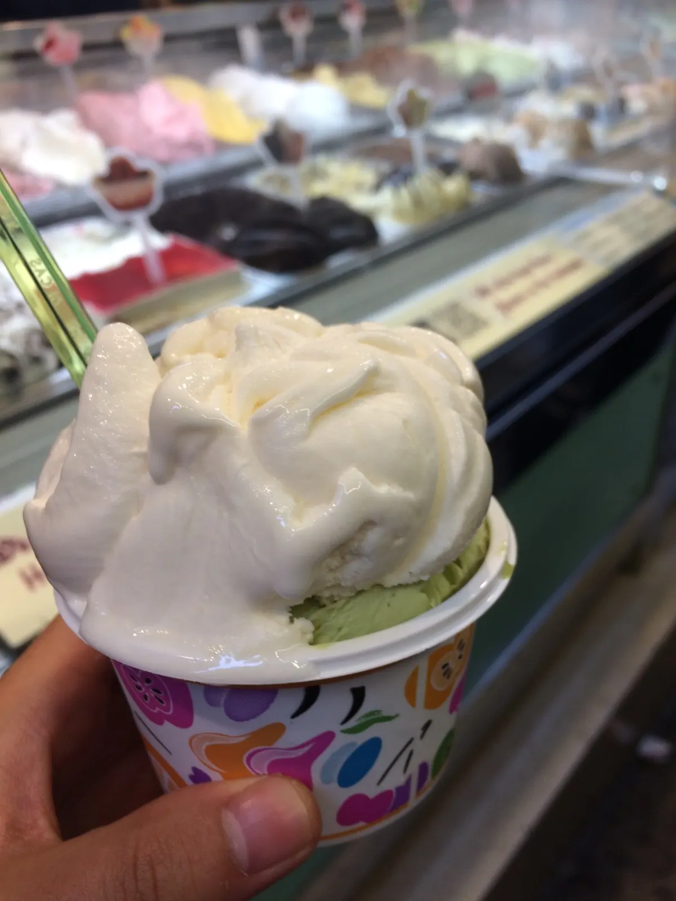
Not sure if the pasta is significantly better than in the States (America has pretty good pasta), but the gelato in Italy is definitely more authentic, healthy, and delicious. And for good reason. There are about 37,000 gelato shops in Italy compared to less than 1,000 in the States. Gelato is part of the Italian culture—gelato here is like Starbucks in America—you can find a gelateria on basically every street—which explains why shops can afford to make fresh small batches on a daily basis. Most prepare the recipe from scratch using egg yolks as a natural emulsifier. They use real fruit too, which helps. Mandarin tasted just like tangerines. Pistachio is my favorite—it’s not an artificial bright green like some pistachio gelato I’ve seen in America but an appealing jade green, and tastes like real pistachios (I love pistachios). It was light, sweet, and creamy.
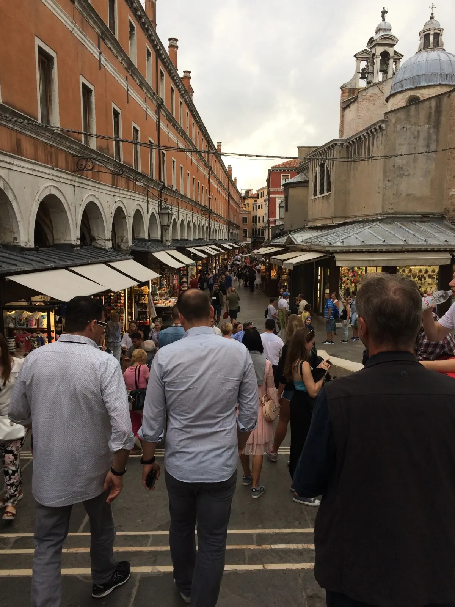
It started to rain in the afternoon, so we took refuge in the first cathedral we came across, near the Rialto Bridge, which is known for the many little tourist-centered shops around it. We sat there for a while, resting and taking in the elaborate artwork around us. All of a sudden a man in the front row began chanting, and soon another joined in. We had walked into a Gregorian chant! The monotonous, repetitive chanting made closing my eyes feel so good. I became alert again when the priest came out in white robes (he had been dressed casually before), and the chanting continued. We left before it was over. I dropped my water bottle as we were leaving and felt glares as I tiptoed out.
I had planned to have dinner at a cicchetti (tapas style) place that I had found on some website like TripAdvisor, but it was quite busy (no doubt because it is now on TripAdvisor) and when the rain started again we went into the first restaurant we saw (we figured they must all be good). I was only craving vegetables so had the tagliotelli with vegetables; we waited almost a whole hour before our small plates of pasta arrived (serving sizes here are pretty small, though to non-Americans they must be pretty normal).
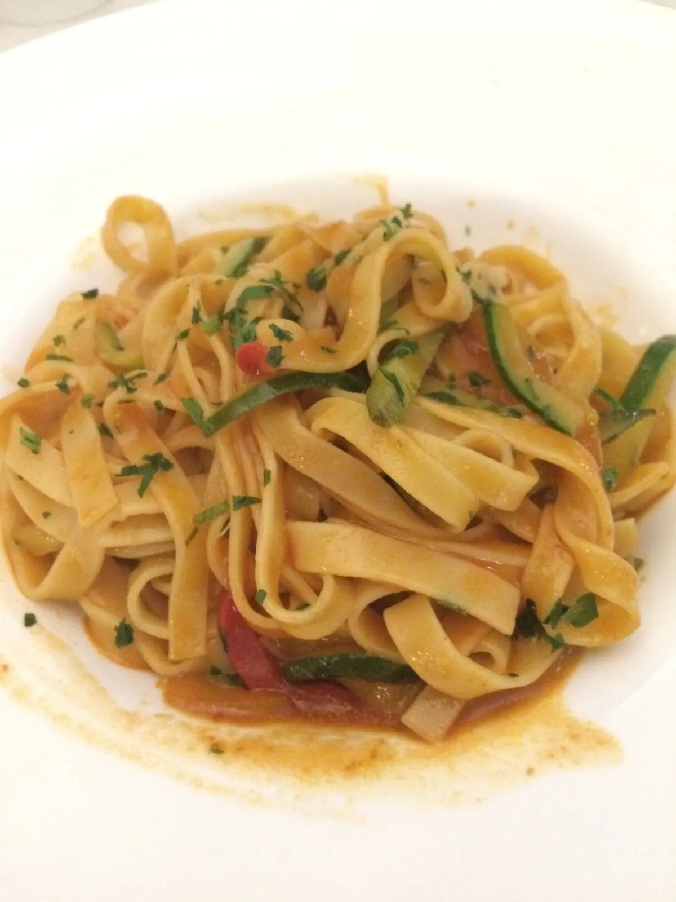
Unlike in America, the pasta here is simple. The focus is on the pasta. Sauce is minimal—there is no tomato sauce piling on the bottom of the plate. They might use condiments with some olive oil and serve it with parmesan cheese. The vegetables and meats are conservative too, which explains the second courses on the menu.
We noticed how the atmosphere in the restaurant was very quiet, and laughed about how Americans are so loud. Tbh, I like it better not having to shout at the person sitting across from you.
The rain had stopped when we left (2 hours later? 3 hours??) and Alice and I made our way back on Strata Nova street, past the now familiar pizza and fruit stands, to the statue of Paolo Sarpi which meant we were near our hostel. I wanted to check all my Wellesley emails (I’m the type of person who checks her email way too often because I need an uncluttered inbox. I like receiving emails too) but due to sketchy WiFi had to leave them for later. Plus a girl was sleeping and asked to turn the lights off.
Friday, September 8, 2017
Venice -> Florence
I’m still quite jet-lagged—I couldn’t sleep last night, and this morning my alarm rang at 7am and I went right back to sleep. Somehow, Alice and I managed to make it to the Rialto Market and back this morning. It was wonderful walking through the streets before 9am as the streets were almost empty of tourists. I saw two people standing near a cart conversing in Italian and other locals making their way around. The Rialto Market was like a farmer’s market. There were stands full of colorful produce from plums to peaches to bright red peppers in clumps like bananas except much smaller. There were colorful assortments of pasta and tagliatelle and tagliolini and linguini, of all different shapes and sizes and widths. Then there was the pescaria, fresh fish and swordfish and octopus and seashell-shaped clams. Usually I don’t like the smell of raw fish, but the seafood was so fresh that it smelled good.

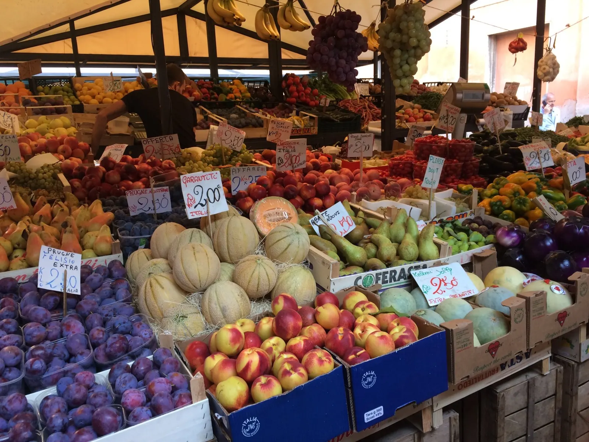

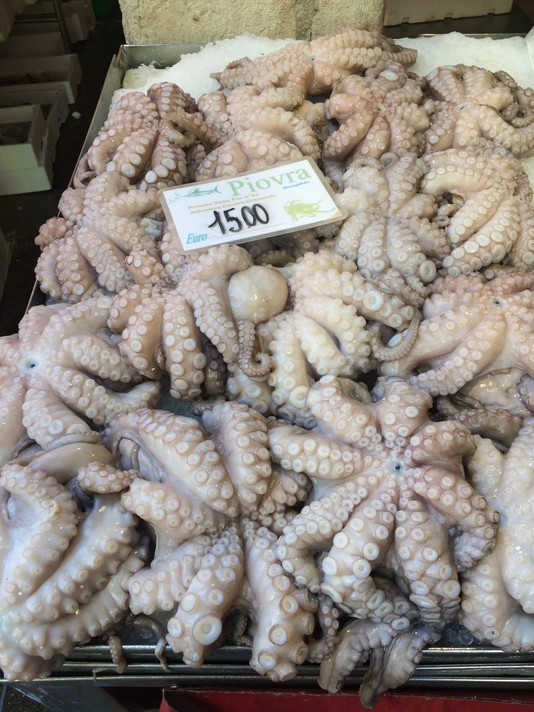
We bought fruit at one of the stands, two plums for me and a peach for Alice.
“Where are you from? Ha-PON?” the fruit stand owner asked.
“America,” I told him.
“Must have a lot of money,” he concluded. He said some Italian including the word americana to the guy next to him, and they laughed. Probably making fun of us Americans as usual.
I bought a mini prosciutto sandwich for 1.50 euros, communicating in English and the only two Italian words I knew, buongiorno and grazie, and placing the coins on the counter at the cashier’s motioning (Italian etiquette?). We walked back, passing a couple bakeries selling cannolis and pastries that looked so good. We had our last views of the Grand Canal on the way to the train station
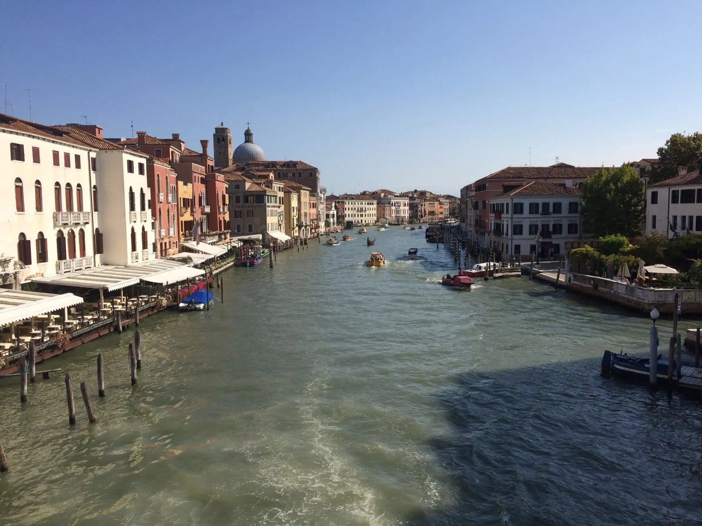
and were soon on our way to Florence. I got a glimpse of the Italian countryside on the pleasant train ride—the rolling hills, the plains of yellow and green grass, the country houses here and there.
Since neither Alice nor I had gotten a SIM card yet, we relied on Rachael’s GPS to get us to our Airbnb, a mile or so out from the train station and main city. When we were ready to move again (only 2 days into the trip and we were already exhausted), we walked back to the main part of the city, past rows of carts selling everything Italian leather—handbags, shoes, belts—and to the Basilica di San Lorenzo, the first cathedral of Florence consecrated in the year 393 by St Ambrose of Milan, where Cosimo il Vecchio de’ Medici is buried.
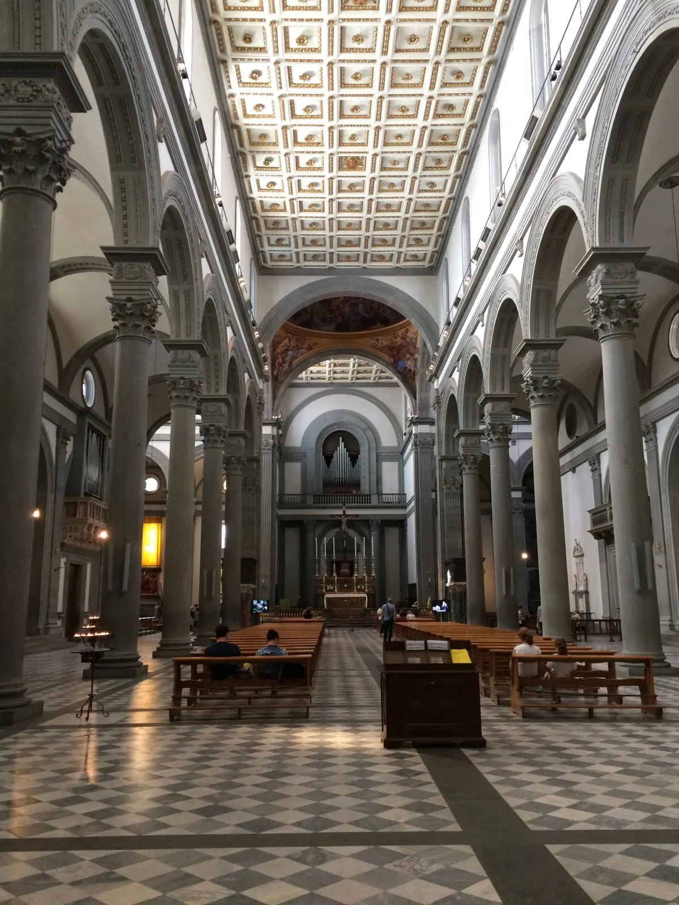
Tip: don’t wear shorts in Florence. I got yelled at for not wearing the shawl they gave us properly. Though short skirts and dresses are okay…
We treated ourselves to fancy desserts including tiramisu at Caffe Gelli before dinner (don’t worry, we still had an appetite for dinner).
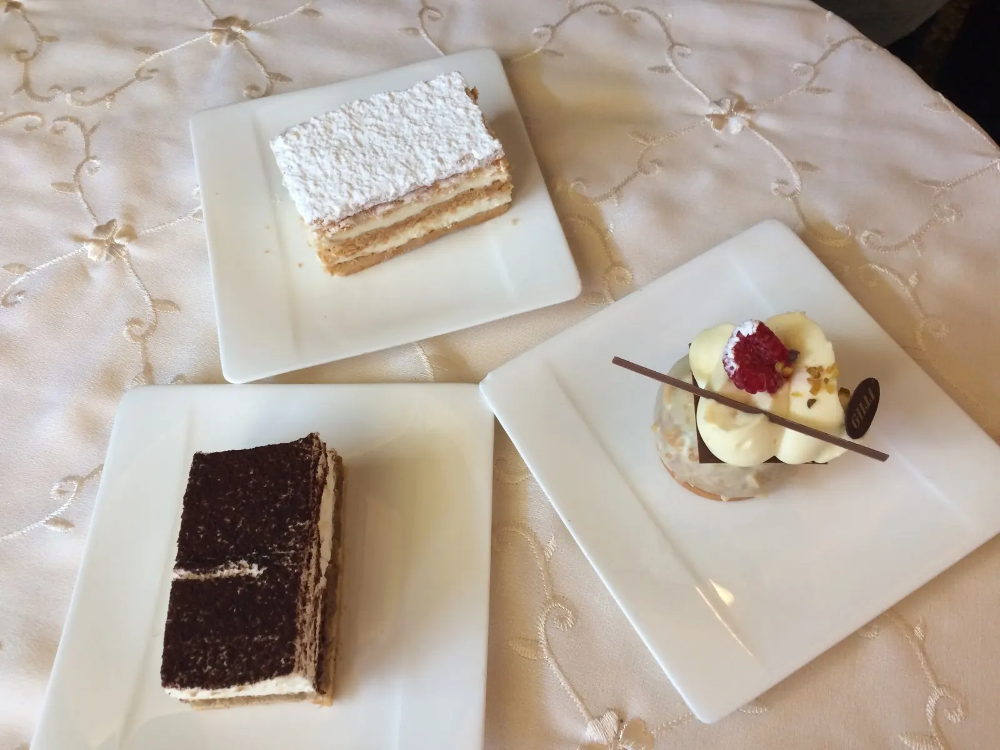
Dinner was homemade Florentine crepes filled with ricotta cheese and spinach. The waiters don’t refill your water or come by and ask how the food is—Americans have high standards for service—and they take their time giving you the check. And the coperto tip is automatically included in the receipt.
Had one of Rachael’s biscotti cookies while walking towards the river. Also, all the wrong-way street signs were graffitied with different artwork. I found them quite humorous.

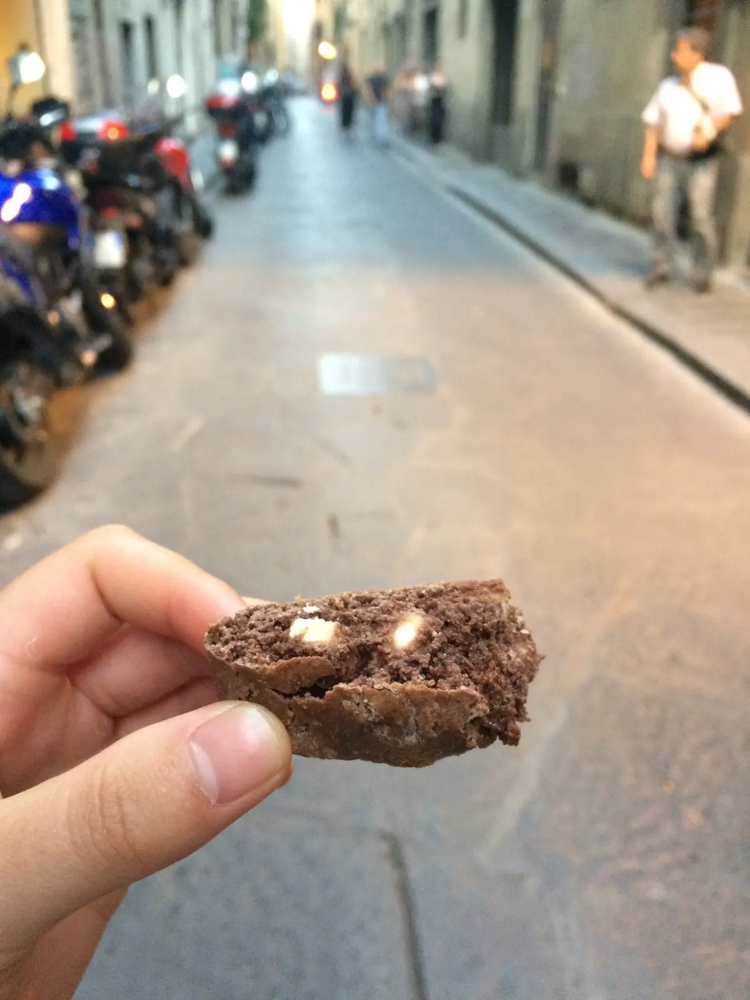

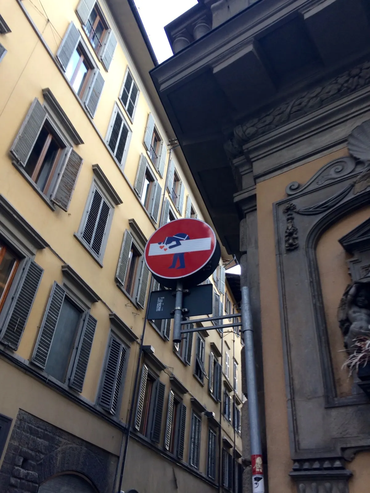

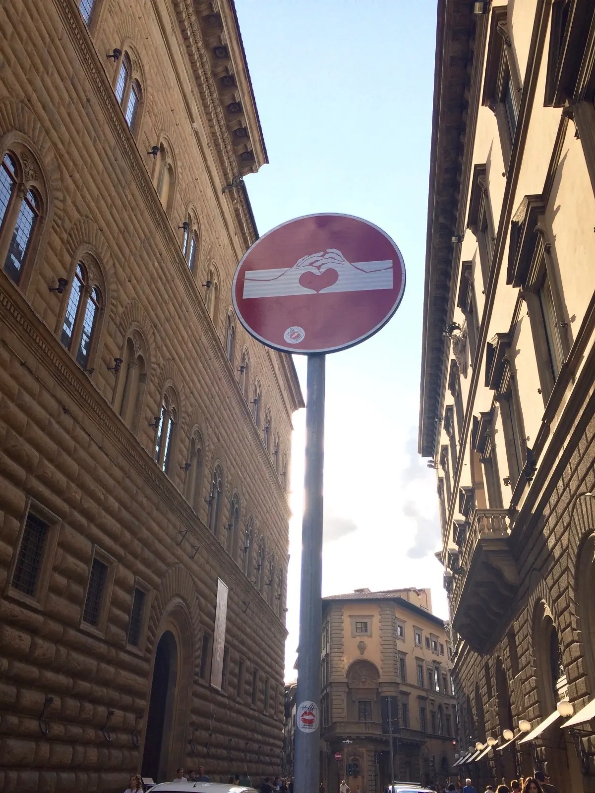
We watched the sunset on a bridge over the Arno River, the main river that flows through Florence and that once contributed to the city’s central role in trade and commerce.
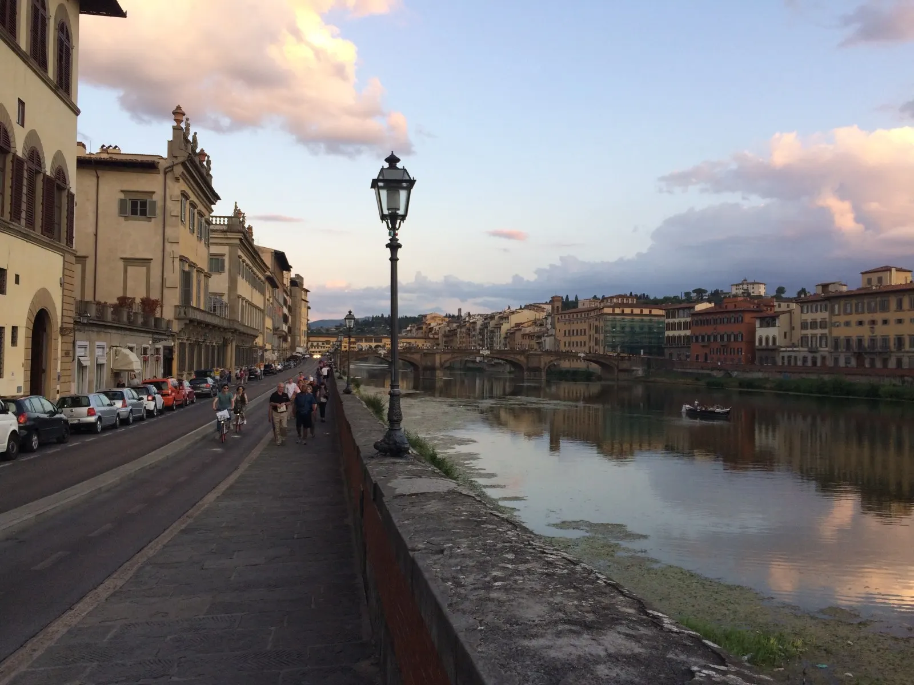
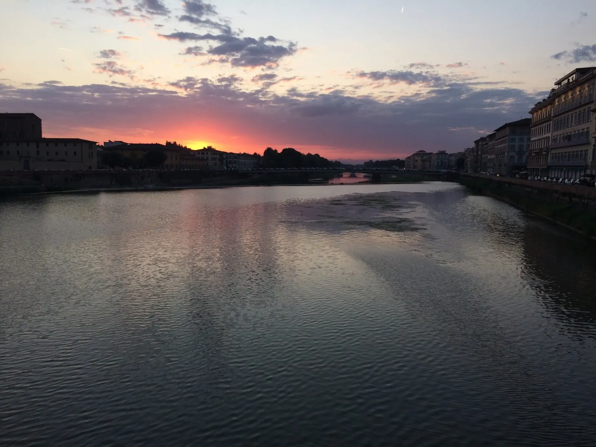
Saturday, September 9, 2017
Firenze the Tourist Way
Everyday feels like a Saturday—the only way we knew today was Saturday was by the crowd of tourists. After drinking a bottle of fresh squeezed orange juice, we walked 30 minutes to the Piazza del Duomo. Rachael brought her selfie stick, so we took a bunch in front of the famous Duomo of Florence (the cathedral of Santa Maria del Fiore, with the Renaissance dome designed by Brunelleschi) and visited the Batista (baptistery), which had stories from the Bible painted in chronological order on its dome ceiling.
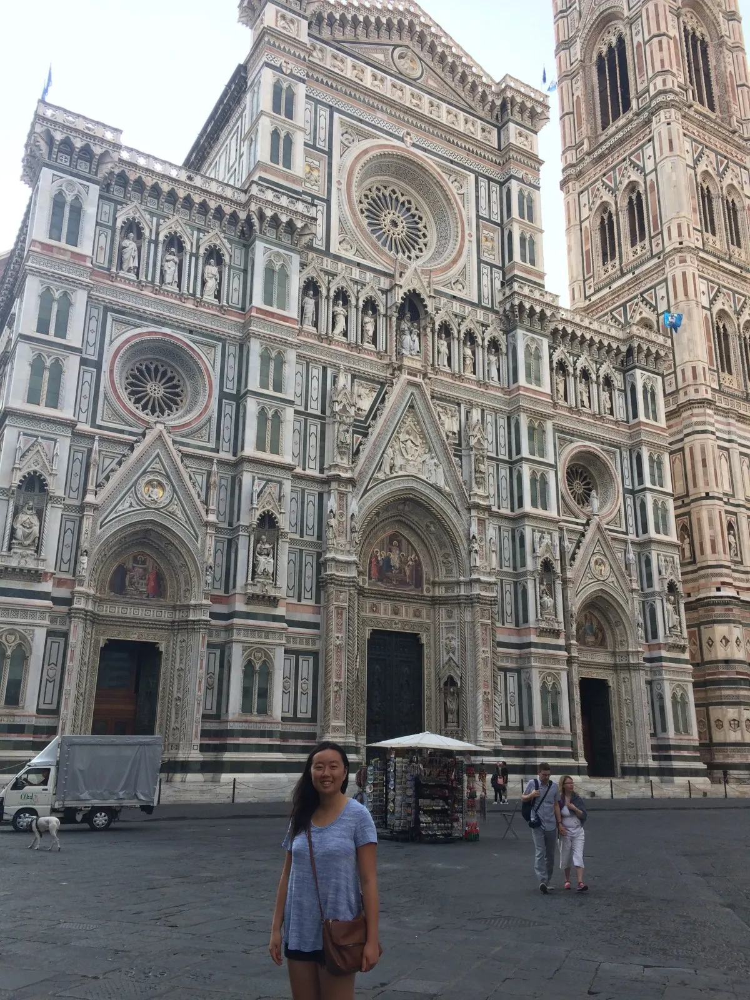
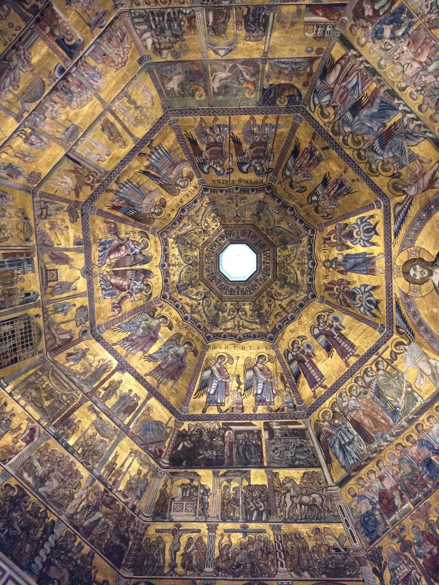
We got a good workout climbing the 414 steps to the top of Il Campanile di Giotto, or Giotto’s bell tower. The bell tower was an eloquent example of 14th century Gothic architecture in Florence. Built between 1334 and 1359 at 84.7 meters tall and considered the most beautiful campanile in Italy, it was likely designed more for decorative than fundamental purposes. The view of the cupola dome (of the Duomo of Florence) and houses that stretched to the hills in the horizon was worth the climb. Unlike Venice, the houses here were mostly white or tan with red brick rooftops and simple identical windows in rows.
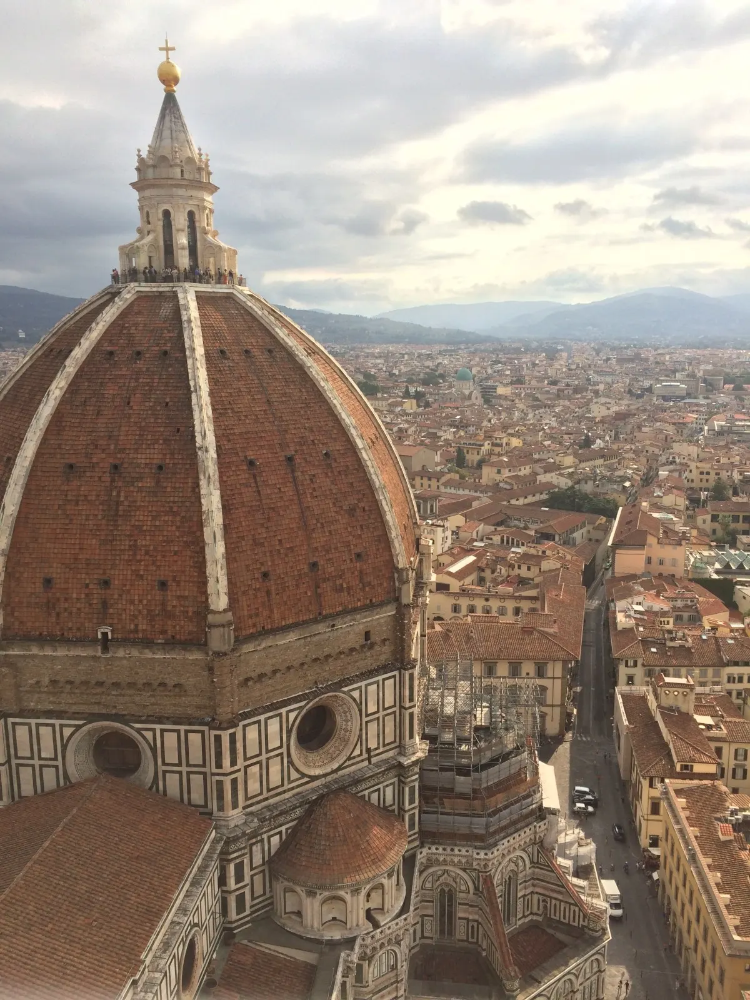
I went into the first TIM store I saw and got a SIM card. I had 3G data at first, but by the end of the day my phone had no service. And I don’t have an online account or customer service number to call, unless I wanted to try to decipher Italian all day. It’s not like there were TIM stores everywhere, so I had to keep an eye out for one.
We had some downtime before our reserved ticket to the Uffizi Gallery, so we walked to the Ponte Vecchio bridge, which was different from the other bridges because it was lined with shops selling expensive jewelry and souvenirs, and filled with tourists.
On the way, we got gelato. Today’s flavor was blueberry! It tasted like a berry smoothie except it melted much more quickly; it was more like an Italian ice.
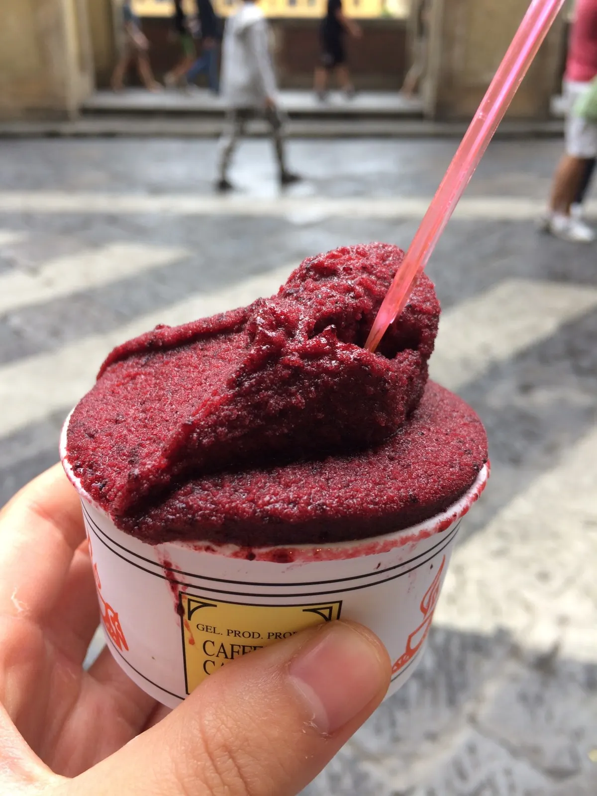
I paused to look at poster paintings of Florence that people were selling on the streets. The moment I stopped and asked how much, the seller pounced and asked me which one I wanted. I scanned the paintings and pointed to the one with a nice view of the buildings of Florence, like the view we would later see from Piazzale Michelangelo. 25, he said. I wasn’t sure if that was a good price, or if I wanted the picture. It was starting to rain and I was worried that it would get wet. I started walking away. 20, he lowered the price. I’ll think about it and come back, I said. How about 15, he replied, following me. It’s their strategy to rush you, and I didn’t like being rushed. I kept walking, and at last he left. A couple of sellers down the road I stopped again. I found the same painting, and asked if he would sell for 15. He agreed. Then I asked for 10. We settled on 13. Thankfully this person had a plastic bag for me to put it in. I ran into him twice more that day in a different location, and both times he recognized that bag and me, and acknowledged me. I wondered how many paintings he sold that day.
The Uffizi Gallery contained busts and sculptures that the Medicis had acquired from the Rome antiquities market between the 16th and 18th centuries; works by Gentile da Fabriano, Filippo Lippi, and Bellini; Botticelli’s The Birth of Venus; classical and Hellenistic art from the 4th-2nd c. BC; Leonardo da Vinci’s Adoration of the Magi. I wish I remembered history from AP Euro; now would’ve been a good time to put it to use. There were so many paintings that after a while I found myself only looking at the large pictures that were almost the height of the wall. It was quite a large museum and our legs were sore from walking.
We decided to go to the Pitti Palace and Boboli Gardens, waited in line to buy tickets, and then decided not to go after all because we didn’t want to pay 10 euros. So we walked all the way back and had dinner at a steakhouse (Florence is known for their steak) that looked more like an Asian restaurant from the number of Koreans eating there—Rachael explained it was the #1 restaurant on the Korean version of Google. We thought a 500g steak would be quite small, and the waiter confirmed it was definitely for just one person—we couldn’t finish it. Plus it was mostly red meat (even though we ordered it medium well) and required effort to cut and chew. But in general it was still pretty tender. The meal also came with wine. It must’ve had a high concentration of alcohol because I tried two sips and started feeling lightheaded. I’m not at all a wine expert but it seemed like pretty high-quality wine to me. It tasted like tangy grapes.
Sunday, September 10, 2017
Florence Day 3: Elaborate art, unique food, grand churches, and breathtaking views
We woke up to thunderstorms and rain—staying in bed would’ve been so nice, but we had an itinerary to follow! Bought a chocolate chip pastry for 1.50 euros on our way to the Galleria dell’Accademia, which was more paintings, almost all collected from churches in Florence. The Medicis commissioned a LOT of artwork—there was a room of musical instruments collected by Grand Prince Ferdinando de Medici, son of Cosimo III. He didn’t care much for the duties of his crown but was quite passionate for the arts and music. I learned that Bartolomeo Cristofori, known as the inventor of the pianoforte, was the instrument maker under Grand Prince Ferdinando. There were a lot of sculptures, though the polka dots on them (used for reference points?) gave me the shivers. The Tree of Life painting stood out to me—Christ was crucified on the Tree of Life, but above him was a small image of a pelican ripping open its breast to provide food for its young, symbolic of Christ sacrificing himself for the salvation of mankind. I also saw a painting of the Pentecost, when the Holy Spirit descended upon the apostles gathered with Mary.
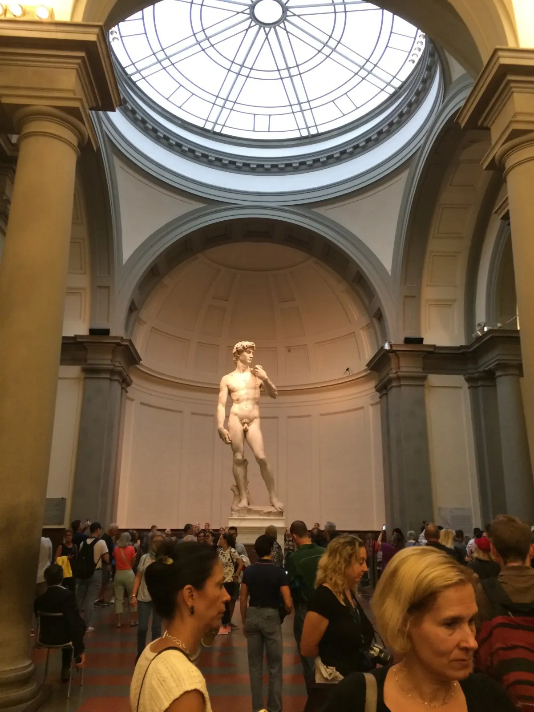
The main highlight of the museum was the original Michelangelo’s David, a symbol of liberty and civic pride for the Florentine Republic because the city identified itself with the hero who had defeated a much more powerful foe with God’s help. The polished smooth white stone displayed a gracefully poised man three times my height, with a slingshot in his left hand and a stone in his right.
We had lunch at the Mercato di San Lorenzo. It was not too different from the Chelsea Market in New York or the Quincy Market in Boston. There was an Eataly like the one in Prudential Center in Boston and stands selling dumplings and gelato, pizza and paninis. We shared a cone with fried coniglio, pollo, carrot, eggplant, zucchini, and pepper.
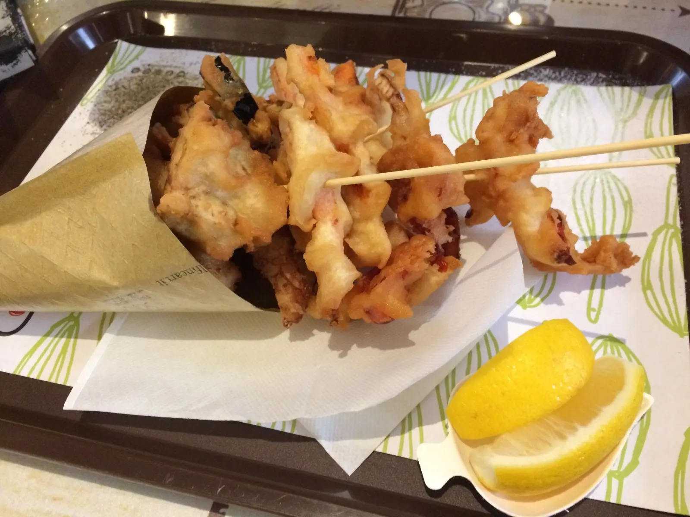
It was my first time eating coniglio, which tasted like chicken, but all I could think of while eating it was my bunny.
I then enjoyed a slice of thick bread with lettuce, mozzarella, and chopped tomatoes with balsamic vinaigrette on top for 4 euros.

No meal (or day) would be complete without gelato, so I had a cup of baked cream and milk with dried figs.
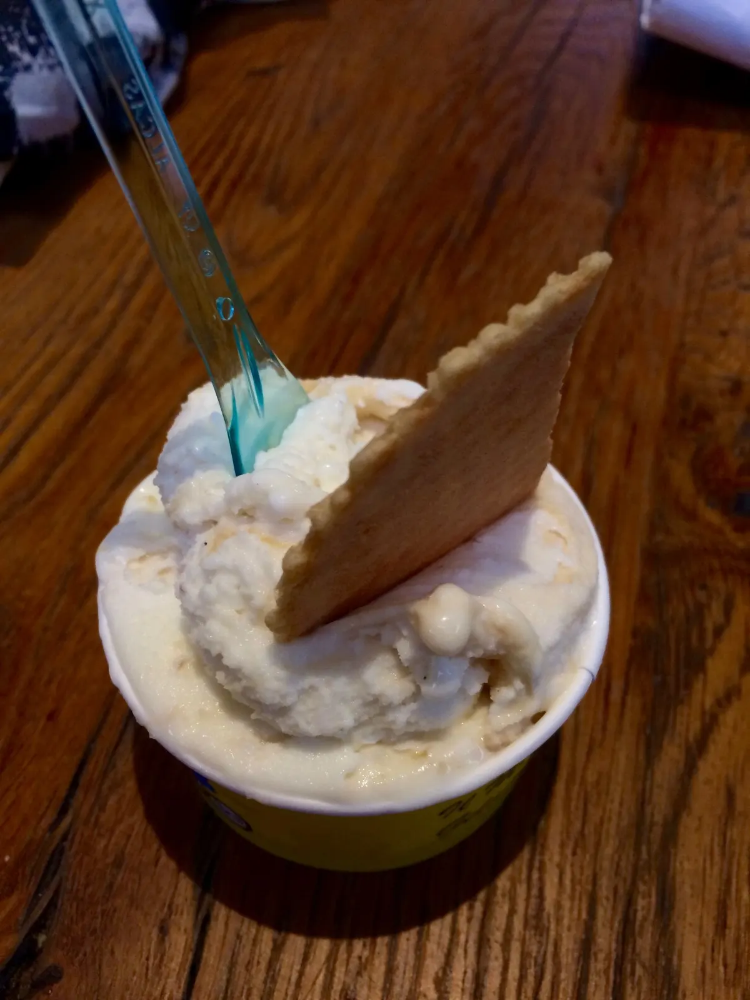
The baked cream gelato was like super vanilla-y ice cream with its own unique flavor, and the milk with dried figs had fig pieces in it—the figs were so sweet I don’t think they even needed to put sugar in it.
The Museo dell’Opera del Duomo was a museum on the history and architecture of the Duomo and bell tower. The Florentine cathedral, designed by Brunelleschi and Arnolfo di Cambio, began in 1296—the sculpture proclaimed the city’s modernity and economic strength, and the prophets and saints carved onto it represented a call to holiness. I found it interesting how the Church conserved the physical remains of saints—St. Paul taught that the human body is a “temple of the Holy Spirit.” The Cathedral and Baptistery in Florence contain more than 600 relics. The façade took 80 years to design, and given how intricate it is, I am not surprised by the intense artistic and ideological debate behind the design. I liked this drawing, which is a pretty accurate depiction of what it looks like in real life.

In an American café selling bagels with scenes of New York on the walls and American music playing and tourists filling the seats, Alice said I had to try her Italian dark hot chocolate, so I took a sip. It was thick and creamy and not too sweet. I took another sip.

The Basilica di Santa Croce, built from 1295, was also a very grand church. It reminded me of a museum, with paintings along the walls and in separate rooms and simple frescoes depicting the stories of the Virgin Mary and Christ and other saints. The nave was very spacious, and the stained glass windows at the front were quite captivating—I could stare at the same wall for hours and barely capture the amount of intricate detail in the paintings and murals.
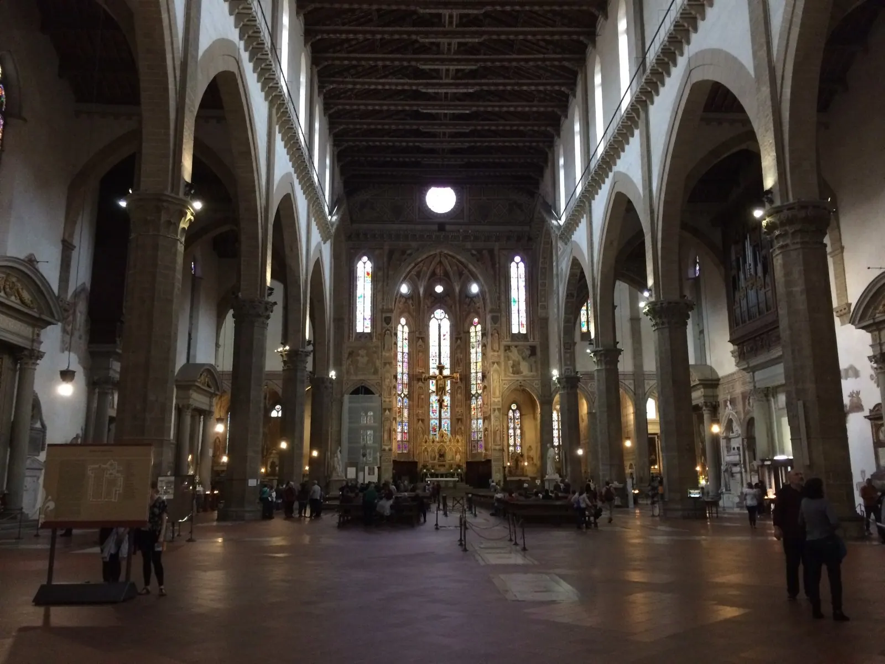
There were also tomb slabs set into the pavement; Michelangelo, Galileo, Machiavelli, Rossini, and Dante Alighieri were all buried here. There were a lot of paintings but also quite a few sculptures of the artists who created the paintings—memorial monuments dedicated to the painters. There was The Liberty of Poetry sculpted by Pio Fedi—apparently it was a source of inspiration for the Statue of Liberty, except it was more feminine and holding lure and crown of laurel in her left hand and remnants of a broken chain (symbol of defeated tyranny) in her right.

We were tired of walking, but we heard the Piazzale Michelangelo had a fantastic view, so we made the trek across the river and up the hill. The view was indeed breathtaking—I must’ve taken 100 photos. Couples used this occasion to take romantic photos, and selfie sticks were seen in abundance (ours included).

7:30 pm: Dinner at San Niccoló restaurant. Meatballs must be really good in Italy because they are eaten separately, so I had a second course of meatballs and spinach, but then felt like I needed some carbs with that, so asked for pesto pasta on the side.

They thought I meant to replace the spinach with the pasta, so I got another plate filled with spinach. The meatballs tasted better—I couldn’t describe how, but the meat must’ve been better quality. The pesto tasted more legit and basil-y, with chopped pine nuts. The spinach was quite salty but at least I got my serving of vegetables for the day—after days of pasta, all I was craving was fruit and vegetables.
Water is such a precious resource. We asked if they give tap water, and the waitress said no, they don’t sell tap water. Let’s hope they don’t sell tap water. So we ordered two bottles of water. Also on the table were candles on top of a wine bottle—by the end of the meal, the candle wax had melted down the bottle and hardened. It was like foam bubbles spilling out of a soda can, running down the side of the can, and freezing there—it was quite a scary sight that sent shivers down my body (a lot of things give me the shivers).
It was a lot of food, but it was such good food I’m glad I got all of it and enjoyed every bite. I was happy we had to walk back to our Airbnb though—my stomach hurt from being so full. No wonder these three-course meals can take hours.